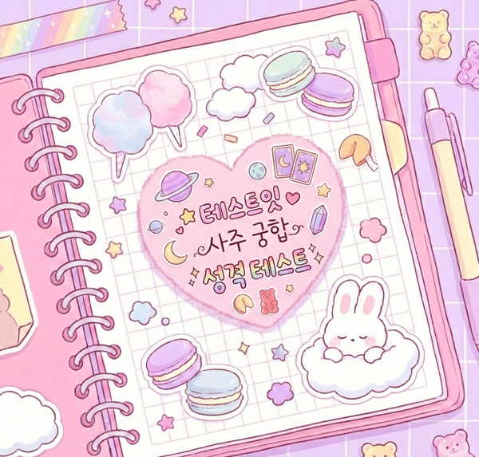

성격
얼굴
그외
사주

테스트 시작하기
사주 정보 입력
🐻 본인 (ME)
🐰 상대방 (YOU)
궁합 결과 보기
💖
🐻
🐰
✨
⭐
🌸
🎀
💕 두 분의 궁합을 보는 중... 💕
잠시만 기다려 주세요! (두근두근)
테스트잇 사주 궁합 성격 테스트
--
--
--
--
--
--
--
--
VS 그래프
ME
💡 기본 성향
💼 사회적 가면
💖 연애 스타일
⚠️ 숨겨진 내면
YOU
💡 기본 성향
💼 사회적 가면
💖 연애 스타일
⚠️ 숨겨진 내면
둘의 성격 정밀 궁합 분석
관계 시뮬레이션
연인이라면?
--
친구라면?
--
가족이라면?
--
그래서 사주로 보는 관계는?
--
@테스트잇 사주 궁합 성격
결과 이미지 저장하기
다시 해보기
다른 테스트 해보기
테스트 공유하기